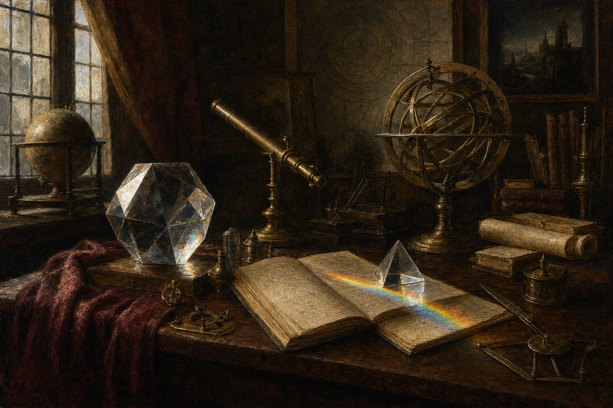
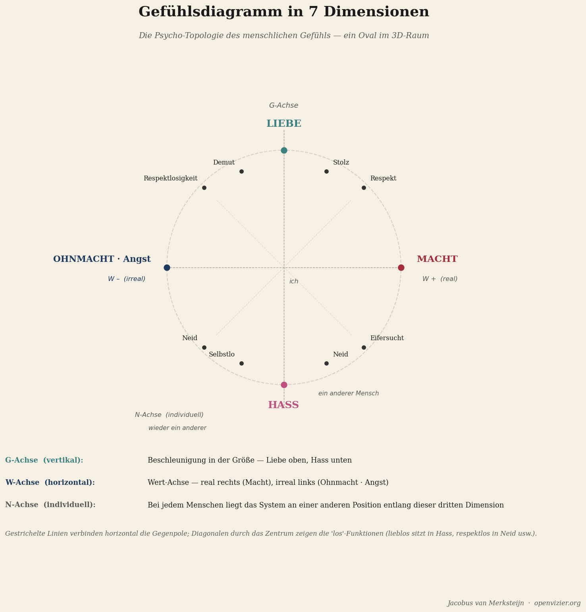
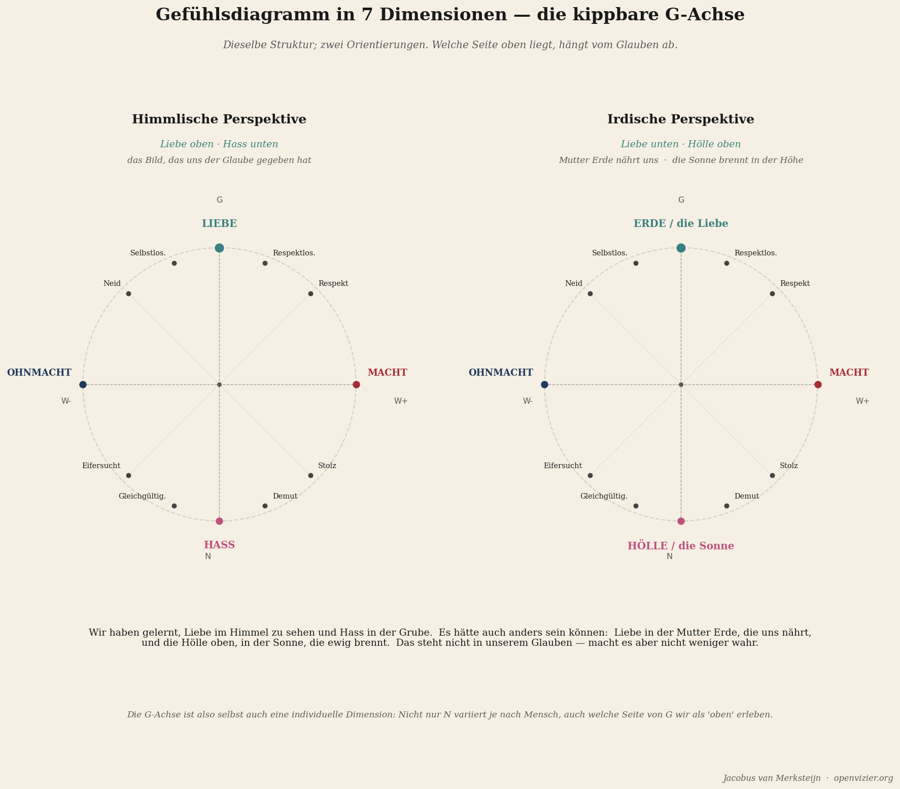

Die sieben Dimensionen
Das 7D-Modell des menschlichen Gefühls
Theorie · 14 Min. Lesezeit

Von Jacobus van Merksteijn
Stell dir vor, du zeichnest eine Karte des inneren Lebens eines Menschen. Keine psychologische Typisierung, keine Liste von Eigenschaften oder Diagnosen, sondern eine echte Karte — mit räumlichen Verhältnissen, mit Achsen und Abständen, mit Gebieten, die aneinander grenzen, und Gebieten, die weit auseinanderliegen. Eine Topografie des Gefühlslebens.
Das ist es, was das 7-dimensionale Gefühlsmodell versucht. Es ist eine Karte — nicht der Gefühle selbst, denn Gefühle lassen sich nicht einfangen — sondern der Strukturverhältnisse zwischen Gefühlen. Wie verhalten sich Stolz und Neid zueinander? Was ist die Beziehung zwischen Macht und Angst? Wann wird Liebe zu Hass, und auf welchem Weg? Diese Fragen sind nicht philosophisch dekorativ. Sie sind praktisch. Wer die Karte kennt, navigiert anders.
Ich erkläre sie hier für den normalen Leser, ohne das mathematische Fundament. Die Vollständigkeit steht in der Denkbasis, die ich gesondert ausgearbeitet habe. Das hier ist die Einführung — die Orientierung für jemanden, der die Struktur verstehen will, bevor die Details folgen.
Die Grundform: ein aufrechtes Oval im Raum

Die Grundform des Modells ist ein Oval, das aufrecht steht. Nicht flach auf einer Fläche, sondern aufgerichtet, wie ein Rückgrat. Das Oval hat ein Oben und ein Unten, ein Links und ein Rechts, und eine Tiefe — die Achse, die ins Bild hinein- und herausführt.
Der oberste Punkt des Ovals ist Liebe. Der unterste Punkt ist Hass. Das ist die fundamentalste strukturelle Eigenschaft des Modells: Liebe und Hass sind keine simplen Gegensätze, die auf beiden Seiten einer Linie stehen. Sie sind die zwei Extreme eines einzigen kontinuierlichen Bogens. Und es gibt zwei Wege von Liebe zu Hass: über die rechte Seite und über die linke.
Das ist die fundamentalste strukturelle Eigenschaft des Modells: Liebe und Hass sind keine simplen Gegensätze, die auf beiden Seiten einer Linie stehen.
Diese zwei Wege beschreiben zwei fundamental verschiedene psychologische Welten.
Der rechte Bogen: die reale Seite
Der rechte Bogen verläuft von Liebe (oben) über den äußersten rechten Punkt bis zu Hass (unten). Die Gefühle auf diesem Bogen sind in einem wirklichen Verhältnis zur Außenwelt verankert. Real bedeutet in der Terminologie dieses Modells: Das Gefühl hat seinen Ursprung in etwas, das wirklich existiert — außerhalb von dir.
Knapp unterhalb von Liebe auf dem rechten Bogen steht Respekt. Nicht der abstrakte Respekt einer Höflichkeitsregel, sondern die konkrete Erfahrung, in dem eigenen Wert von einem anderen Menschen anerkannt zu werden. Respekt ist ein reales Gefühl: Man kann es sich nicht ausdenken, wenn es nicht vorhanden ist. Es braucht eine Gegenseite.
Etwas weiter unten steht Stolz. Die innere Anerkennung der eigenen Leistung oder Qualität im Verhältnis zur Außenwelt. Stolz unterscheidet sich von Narzissmus: Stolz ist in dem verankert, was wirklich erreicht wurde. Narzissmus ist eine Geschichte, die losgelöst von der Wirklichkeit dahintreibt.
Am äußersten Punkt des rechten Bogens — dem äußersten rechten Punkt, in der Mitte der Höhe — steht Macht. Die Fähigkeit, wirksam zu sein, Dinge geschehen zu lassen, Einfluss auszuüben. Macht ist in diesem Modell neutral: Es beschreibt eine Position in der Struktur, kein moralisches Urteil. Macht kann für gute oder schlechte Zwecke eingesetzt werden. Die Position ist dieselbe.
Jenseits von Macht, auf der Seite, die zu Hass absteigt, steht Eifersucht. Eifersucht ist die reale Wahrnehmung, dass jemand anderes etwas hat, das man selbst begehrt, aber nicht besitzt. Sie ist real, weil sie in einem tatsächlich wahrgenommenen Unterschied verankert ist. Sie hat eine aktive Komponente: Die Eifersucht will nicht, dass der andere es nicht hat — sie will es selbst auch haben.
Knapp oberhalb von Hass steht Neid. Und hier wird der Unterschied zwischen Eifersucht und Neid entscheidend, denn im alltäglichen Sprachgebrauch werden sie durcheinandergebracht. Neid will nicht, dass du es selbst bekommst. Neid will, dass der andere es auch nicht hat. Es ist der Wunsch nach dem Fall des anderen, unabhängig vom eigenen Gewinn. Neid trägt Hass als Potenzial in sich.
Und dann Hass, ganz unten. Nicht als Gegenteil von Liebe im kindlichen Sinne — ich liebe dich, ich hasse dich — sondern als Zustand der maximalen negativen Verbindung mit der Wirklichkeit außerhalb von dir selbst. Die aktive Ablehnung. Die destruktive Orientierung.
Der linke Bogen: die irreale Seite
Der linke Bogen verläuft parallel zum rechten, aber auf der anderen Seite. Die Gefühle hier sind die irrealen Gegenpole der realen Gefühle auf dem rechten Bogen. Irreal bedeutet nicht: nicht wirklich, nicht spürbar, weniger gültig. Es bedeutet: in einem inneren Zustand verankert, der unabhängig von der tatsächlichen Außenwelt existieren kann.
Knapp unterhalb von Liebe auf dem linken Bogen steht Unrespekt. Dieses Wort verdient Aufmerksamkeit. Unrespekt ist nicht der Mangel an Respekt von außen — das wäre ein reales Gefühl, die Situation, in der jemand einen tatsächlich nicht respektiert. Unrespekt als irreales Gefühl ist das tiefe Erleben, sich selbst nicht des Respekts für würdig zu halten. Dieses Gefühl kann unabhängig davon vorhanden sein, was andere von einem denken. Menschen, die von allen respektiert werden und sich selbst trotzdem fundamental minderwertig fühlen, kennen dieses Gefühl von innen.
Etwas weiter unten steht Unstolz. Das Erleben von Unzulänglichkeit, das losgelöst davon ist, was man tatsächlich geleistet hat. In seiner extremen Form: die tiefe Scham — nicht als moralische Emotion, sondern als direktes inneres Wissen, dass man fundamental versagt.
Am äußersten Punkt des linken Bogens stehen Ohnmacht und Angst, und sie teilen diese Position. In diesem Modell sind Ohnmacht und Angst zwei Aspekte desselben Phänomens: Ohnmacht ist die strukturelle Position — das Gefühl, es nicht zu können. Angst ist die zeitliche Komponente — das Erleben des Bedrohlichen, das durch die Ohnmacht nicht abgewendet werden kann. Wer strukturell Ohnmacht erlebt, erlebt die Welt als bedrohlich. Das ist Angst.
Angst ist die zeitliche Komponente — das Erleben des Bedrohlichen, das durch die Ohnmacht nicht abgewendet werden kann.
Jenseits der Mitte, in Richtung Hass, steht Un-Eifersucht. Das ist ein subtiles und selten besprochenes Gefühl: nicht das Verlangen nach dem, was der andere hat, sondern das Nicht-Verlangen-Können — der innere Zustand des Betäubt-Seins gegenüber dem eigenen Mangel. Die Person, die ihre eigene Eifersucht nicht fühlen kann, hat die Verbindung zu ihrem eigenen Verlangen verloren. Das ist kein Zeichen von Heiligkeit. Es ist ein Zeichen von Abschottung.
Dann Un-Neid, knapp oberhalb von Hass. Nicht der aktive Wunsch, dass der andere fällt, sondern das Betäubt-Sein für den Fall des anderen. Nicht mehr berührt werden von Unrecht. Dass es nicht mehr darauf ankommt.
Und Hass, unten, geteilt mit dem rechten Bogen. Liebe oben verbindet die beiden Bögen. Hass unten verbindet sie ebenfalls. An den extremen Punkten fällt der Unterschied zwischen real und irreal weg.
Die drei Achsen
Das Oval schwebt in einem dreidimensionalen Raum, der durch drei Achsen bestimmt wird.
Die G-Achse verläuft vertikal: von Liebe oben zu Hass unten in der Standardausrichtung. G steht für Größe, für die Intensitätsdimension. Je höher auf der G-Achse, desto mehr bewegt sich das Gefühl in Richtung Liebe. Je tiefer, desto mehr konvergiert es in Richtung Hass.
Die W-Achse verläuft horizontal: real rechts, irreal links. W steht für Wert, für die Frage, ob ein Gefühl in der Außenwelt oder in der Innenwelt verankert ist. Am äußersten rechten Punkt steht Macht. Am äußersten linken Punkt stehen Ohnmacht und Angst. Sie sind Spiegelbilder voneinander — nicht qualitative Gegensätze, sondern strukturell isomorph. Wer Macht erfahren hat, weiß, wie sich Ohnmacht anfühlt. Nicht durch Argumentation, sondern durch strukturelle Nähe.
Die N-Achse verläuft in der Tiefe — senkrecht zu der Ebene, die G-Achse und W-Achse aufspannen, sozusagen ins Bild hinein und heraus. Bei jedem Menschen liegt die vollständige Ovalstruktur an einer anderen Position entlang der N-Achse. Die N-Achse ist die individuelle Dimension. Zwei Menschen, die dasselbe Wort benutzen — Eifersucht, Stolz, Angst, Liebe — erleben das entsprechende Gefühl aus einer völlig anderen Biografie heraus. Die Eifersucht eines Kindes, das in Armut aufwächst, und die Eifersucht eines Kindes in Wohlstand liegen an derselben geometrischen Stelle im Oval, aber an einer völlig anderen N-Position. Sie sind strukturell gleich, aber biografisch radikal verschieden.
Die N-Achse macht das Modell dynamisch: Ein Mensch bewegt sich im Laufe seines Lebens entlang der N-Achse. Erfahrungen, Lernprozesse, Traumata, Heilung — all das bewegt die N-Position. Die Struktur des Ovals bleibt; die Position des Menschen darin verschiebt sich.
Die diagonalen Loos-Funktionen
Das überraschendste Element des Modells sind die diagonalen Verbindungen — die Loos-Funktionen. Sie verlaufen nicht horizontal von rechts nach links, sondern diagonal: von einem Punkt auf dem rechten Bogen, quer durch das Zentrum des Ovals, zu einem Punkt auf dem linken Bogen, der nicht auf gleicher Höhe liegt.
Das Zentrum des Ovals ist der Nullpunkt — der Punkt maximaler Leere, die innere Stille in ihrer extremen Form, nicht die Stille, die trägt, sondern die Stille, die anzeigt, dass kein Kontakt mehr zum Gefühlsleben besteht.
Die diagonalen Paare sind: Respekt (rechts oben) durch das Zentrum zu Un-Neid (links unten). Stolz (rechts oben) durch das Zentrum zu Un-Eifersucht (links unten). Eifersucht (rechts unten) durch das Zentrum zu Unstolz (links oben). Neid (rechts unten) durch das Zentrum zu Unrespekt (links oben).
Die diagonalen Paare sind: Respekt (rechts oben) durch das Zentrum zu Un-Neid (links unten).
Was bedeutet das? Es beschreibt den Zustand, der entsteht, wenn ein Gefühl über den Nullpunkt entladen wird. Lieblos sitzt in Hass — nicht die Abwesenheit von Liebe, sondern ihre aktive Negation, der Hass, der durch den Nullpunkt hindurchgereist ist. Machtlos sitzt in Angst. Respektlos — im topologischen Sinne — beschreibt einen Zustand des Betäubt-Seins gegenüber dem anderen, der über das Zentrum des Respekts gereist ist.
Der Unterschied zwischen Unrespekt (dem horizontalen Gegenpol) und Respektlos (der diagonalen Loos-Funktion) ist keine semantische Haarspalterei. Er ist fundamental. Unrespekt ist ein aktives Gefühl: die direkte innere Wahrnehmung, nicht respektabel zu sein. Respektlos ist der Zustand, keinen Kontakt zum Gefühl von Respekt überhaupt zu haben — eine Erosion, keine Spiegelung. Beide erzeugen Verhalten, das die Außenwelt "respektlos" nennt, aber die innere Architektur unterscheidet sich vollständig — und damit auch die adäquate Reaktion darauf.
Die kippbare G-Achse: himmlisch oder irdisch?

Es gibt eine Eigenschaft des Modells, die am radikalsten ist und an der ich hier nicht stillschweigend vorbeigehen will: Die G-Achse ist kippbar.
In der Standardausrichtung steht Liebe oben und Hass unten. Das ist die himmlische Perspektive — die westliche, christlich geprägte Orientierung. Gott ist oben, das Böse ist unten. Licht zeigt aufwärts, Dunkelheit zeigt abwärts. Diese Ordnung ist so tief verwurzelt, dass sie selbstverständlich wirkt, als gehörten Liebe und Oben auf eine nicht-kontingente Weise zusammen.
Aber es gibt auch eine irdische Perspektive. In dieser ist Liebe unten — als Mutter Erde, die uns trägt und nährt, der Boden, auf dem wir stehen, die Quelle allen Lebens. Und Hass ist oben — als die Sonne, die brennt und versengt, was ihr zu lange ausgesetzt ist. Die Erde nährt. Die Sonne brennt.
Das ist kein Relativismus. Es ist Topologie. Dieselbe Struktur kann in mehreren Ausrichtungen existieren, ohne dass sich die Struktur selbst verändert. Was sich ändert, ist die Bedeutung, die eine Kultur oder ein Individuum den Positionen gibt. Und diese Bedeutung ist selbst eine psychologische Tatsache über die Person — etwas, das untersucht, verstanden und gegebenenfalls korrigiert werden kann.
Nicht nur Kulturen orientieren sich auf ihre eigene Weise an der G-Achse. Auch Individuen tun das. Für jemanden, der in einer Tradition aufgewachsen ist, in der die Liebe der Erde zentral ist — die Bäuerin, die ihr Land kennt, der Fischer, der sein Meer kennt — ist die irdische Orientierung der G-Achse unmittelbar erkennbar. Für jemanden, der in einer städtisch-religiösen Tradition aufgewachsen ist, ist die himmlische Orientierung selbstverständlich. Beide sind gültig. Die G-Achse ist selbst eine individuelle Variable. Das macht das Modell radikal persönlich.
Was die Karte liefert
Eine Karte ist nützlich, wenn sie zeigt, wo man ist und wie man von A nach B kommt. Die Topografie des Gefühlslebens leistet genau das. Sie zeigt, dass Ohnmacht und Eifersucht nicht dasselbe Art von Gefühl sind, auch wenn beide schmerzhaft sind. Sie zeigt, dass Neid und Eifersucht strukturell verwandt, aber fundamental verschieden sind. Sie macht den Unterschied sichtbar zwischen einem Gefühl, das in der Wirklichkeit verankert ist, und einem Gefühl, das das nicht ist — ein Unterschied, der in der alltäglichen Umgangssprache vollständig verloren gegangen ist.
Und sie gibt die Sprache für das Gespräch, das wir als Gesellschaft brauchen: nicht das Gespräch darüber, welche Gefühle gut und welche schlecht sind — diese Frage ist moralistisch und führt nirgendwohin — sondern das Gespräch darüber, woher ein Gefühl kommt, über welchen Weg es entstanden ist, und was es verlangt. Dieses Gespräch ist nur möglich, wenn eine gemeinsame Karte vorhanden ist. Das ist diese Karte.
Wer weiterlesen möchte: Das 7-dimensionale Gefühlsdiagramm ist vollständig ausgearbeitet, einschließlich der mathematischen Topologie und der therapeutischen Anwendungen, im Werk Denkbasis für ein 7-dimensionales Gefühlsmodell. Die pädagogische Ausarbeitung — was die sieben Dimensionen für die Entwicklung von Kindern in welchem Alter bedeuten — steht im Manifest für Bildung und Erziehung. Beide sind als Download auf openvizier.org verfügbar.
Die pädagogische Ausarbeitung — was die sieben Dimensionen für die Entwicklung von Kindern in welchem Alter bedeuten — steht im Manifest für Bildung und Erziehung.
Die sieben Dimensionen des Gefühls
Eine Karte des inneren Lebens — nicht der Gefühle selbst, sondern der Strukturverhältnisse zwischen ihnen. Wie verhält sich Stolz zu Neid? Wann wird Liebe zu Hass, und auf welchem Weg?
"Wer die Karte kennt, navigiert anders."
Das Oval: Liebe oben, Hass unten
Die Grundform des Modells ist ein aufrechtes Oval. Der oberste Punkt ist Liebe. Der unterste Punkt ist Hass. Das Entscheidende: Es gibt zwei Wege von Liebe zu Hass — über den rechten Bogen und über den linken. Zwei fundamentale verschiedene psychologische Welten.
Der rechte Bogen trägt die realen Gefühle: Respekt, Stolz, Macht, Eifersucht, Neid. Verankert in der tatsächlichen Außenwelt. Der linke Bogen trägt die irrealen Gegenpole: Unrespekt, Unstolz, Ohnmacht, Angst, Un-Eifersucht, Un-Neid. Diese Gefühle existieren unabhängig davon, was außen wirklich geschieht. Irreal bedeutet nicht weniger gültig — es bedeutet: in einem inneren Zustand verankert.
Die drei Achsen
Die N-Achse macht das Modell dynamisch. Ein Mensch bewegt sich im Laufe seines Lebens entlang der N-Achse. Traumata, Heilung, Erfahrungen verschieben die Position. Die Struktur des Ovals bleibt.
Die diagonalen Verbindungen — und die kippbare G-Achse
Das überraschendste Element sind die diagonalen Loos-Funktionen: Sie verlaufen nicht horizontal, sondern durch das Zentrum des Ovals, von einem Punkt des rechten Bogens zu einem Punkt des linken, der nicht auf gleicher Höhe liegt. Das Zentrum ist der Nullpunkt — maximale innere Leere, der Zustand, in dem kein Kontakt mehr zum Gefühlsleben besteht.
Und die G-Achse ist kippbar. In der himmlischen Perspektive steht Liebe oben, Hass unten. In der irdischen Perspektive ist Liebe unten — als Mutter Erde, die trägt und nährt. Das ist kein Relativismus. Es ist Topologie. Dieselbe Struktur, verschiedene Ausrichtungen — und die Ausrichtung selbst ist eine psychologische Tatsache über die Person.
Schluss
Diese Karte gibt die Sprache für das Gespräch, das wir als Gesellschaft brauchen. Nicht das Gespräch darüber, welche Gefühle gut und welche schlecht sind — diese Frage ist moralistisch. Sondern das Gespräch darüber, woher ein Gefühl kommt, über welchen Weg es entstanden ist, und was es verlangt.
"Neid und Eifersucht werden im Alltag durcheinandergebracht. Das ist keine semantische Lässigkeit — es ist eine Amputierung der Navigationsmöglichkeit." — Jacobus van Merksteijn